안녕하세요 빌스택스님! 인터뷰에 참여해주셔서 감사합니다.
안녕하세요. 용산구 이태원 Trap Daddy, 섭이아빠 빌스택스입니다(웃음).
앨범 발매 준비로 한창 바쁘실 텐데 함께해주셔서 감사드립니다. 지금 저희는 이태원 카페에서 이야기 나누고 있습니다. 집이 여기서 5분 거리라고 하셨어요. 이태원에서 살아보니까 어떠세요?
산이 있다는 게 참 좋아요. 처음에는 언덕이 조금 고통스러운데, 그 고통 진짜 딱 일주일만 갑니다. 이후에는 적응되고 편해져요. 남산에도 좋은 공원이 조성되어 있고요. 굉장히 조용하고 깨끗하고 생태계도 풍부하게 펼쳐져 있습니다.
그리고 동네 주민분들이 외국인들과 함께 생활하고 있기 때문에 문신이나 탈색 같은, 패션에 대한 선입견이 많이 없으신 편이에요. 젊은 분들은 당연히 더 힙한 친구들도 많고. 개인적으로는 각종 가게 간판에서도 영감을 많이 받고 있어요. 약간 해외 바이브도 있고, 좋아하는 이유에 굉장히 여러 가지가 있습니다.
며칠 전 뮤직비디오 촬영을 이태원 곳곳에서 진행했다고 하셨어요. 그때 감기에 걸리셨다고 하셨는데 몸은 좀 어떠신지.
목이 살짝 칼칼하네요(웃음).
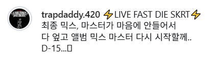
며칠 전 인스타에서는 믹스랑 마스터링 작업을 새로 시작하셨다고 소식을 알렸는데.
솔직히 작업하면서도 개인적으로 성에 차지 않았어요. 그러다 어느 날 릴러말즈 작업실에서 크게 들어봤거든요? 릴러가 사운드에 굉장히 민감하고, 환경에 대한 투자도 많이 할 정도로 신경을 많이 쓰는 친구라 이런 쪽에서 저보다 훨씬 더 많이 알아요. 근데 그 친구도 들어보고 믹스 마스터 다시 하자고 제안하는 거예요. 김상일 기사님이라고 자기가 잘 아는 분이랑 연결해 주겠다 해가지고 오케이 다시 해보자 했죠.
근데 재작업하는 비용이 만만찮게 들어가잖아요. 그래서 조심스럽게 이사님이랑 이야기를 나눴는데, 1초의 고민도 없이 바로 진행하자고 해서 작업 들어갔죠.
진짜 큰 결심 하신 거네요.
이게 진행이 된다 하더라도 한 번에 100% 완성이 되는 게 아니잖아요. 수정 사항이 반드시 생길 거고, 티키타카가 몇 번 오갈 거잖아요. 최종의 최종의 최최종의 진짜 최종 이런 식으로(웃음). 더불어 이런 결정을 내린 데 감사한 부분이 듣다 보니까 또 부분적으로 아쉬운 데가 많더라고요. 그래서 그런 부분도 다 보완하고 있어요. 그래서 오히려 잘됐다고 생각하고 있어요. 4월 20일에 발매된다는 사실은 변함없습니다.
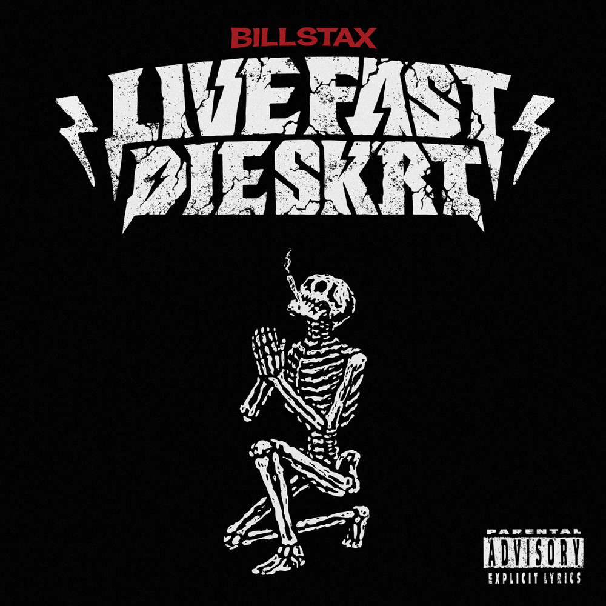
새로운 앨범 [LIVE FAST DIE SKRT]입니다. 작년부터 이 타이틀로 앨범을 낼 거라고 예고를 해오셨어요.
그냥 막살고 죽을 때는 악- 하고 죽자! 그런 의미입니다(웃음). 나이가 드니까 죽음에 대해 생각하는 시간이 많아졌어요. 주위에 아는 형도 길 가다 갑자기 심장마비로 돌아가시고, 점점 결혼 소식보다 부고 소식이 많아지니까요. 앞으로 시간이 흐를수록 내 주변에 죽는 사람은 더욱 많아질 텐데, 그럼 나는? 나는 과연 어떤 삶을 살다 갈까? 이런 것들을 고민하다 한가지 결론을 내린 게, 어차피 뒤질 거 하고 싶은 거 다 하자, 였어요. 할 거 다 하고, 나의 내일을 당겨다 쓰자! 이번 앨범에 담겨있는 저의 삶의 태도입니다.
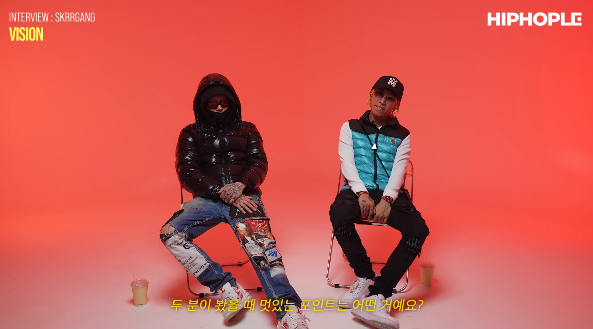
빌스택스 님의 라이프 스타일 자체가 타이틀에 담긴거네요. 앨범에는 구체적으로 어떤 이야기를 담고 싶으셨나요?
제가 오랜만에 힙합LE에서 스꺼러갱 인터뷰한 거를 우연히 보게 됐어요. 이런 얘기를 하더라고요. 스꺼러갱이 생각하는 멋있는 포인트. 그때 저희가 막 여자, 섹스, 스모킹, 문신 이런 이야기 꺼냈는데(웃음). 돈, 투자 이런 이야기도 하고. 이걸 보니까 정신이 번쩍 드는 거예요. 그렇지, 내가 뭔 이야기를 해. 마지막 가는 길에 무슨 이야기 할까 고민 많이 했는데 그냥 하던 이야기나 하자. 내가 갑자기 다른 이야기를 하는 것도 웃기고, 하던 이야기 더 재밌게 담아내면 되지 않을까 싶었죠.
그러고보니 저희가 처음에 인터뷰를 준비할 때, 아무래도 빌스택스님의 마지막이다 보니 커리어 전체를 훑어보는 방향으로 기획했거든요. 근데 지난 이야기들은 되도록 패스했으면 좋겠다고 하셨죠.
저는 바스코라는 아티스트는 그냥 죽어서 없어졌다고 생각해요. 이제 그 사람(바스코)은 저한테 의미가 없어요. 아직도 저를 바스코라고 부르는 분들이 계시는데, 그렇게 불리는 것도 싫고 과거 이야기를 하고 싶지 않아요. 다시 한번 그 이야기를 꺼내면 과거의 바스코가 저를 또 붙잡을까 봐.
그래서 이번 인터뷰도 빌스택스님의 지금과 앞으로의 미래를 조명할 수 있도록 준비했습니다(웃음). 첫 번째 트랙이 선공개 싱글이기도 한 “반짝반짝 Freestyle”이었습니다. 이거 딱 공개됐을때 반응이 폭발적이었죠.
빵 터졌나요? 그때 반응이 어땠는지 잘 모르겠네.
커뮤니티나 SNS 반응 보면 다들 입을 모아 ‘빌스택스는 시대를 타지 않는 트렌디함을 가지고 있는 뮤지션’이라고 많이 이야기 하더라고요.
제가 이런 반응을 볼만한 곳이 많이 없어요. 어디서 봐야 할지 모르겠어요. 스포티파이에서 댓글 같은 걸 볼 수 있는 것도 아니고. 사실 크게 신경을 안 쓰려고 해요. 많은 사람이 좋아해 주면 당연히 기분 좋지만, 싫어한다고 해서 제 기분이 나빠지는 것도 아니거든요. 내 걸 못 느낀다고? 그래 알았다- 이 정도 감상인 거죠.
아무래도 뮤지션 분들은 자기만의 확고한 길이 있으니까요.
‘우와~ 빌스택스 잘한다~’라고 칭찬받아서 제가 흡족해하는 것도 그림이 웃기고, 욕하는 걸 보면서 열 내는 것도 웃기잖아요. 요즘 저한테는 이런 반응 확인하는 것도 시간 낭비 같아요. 그 시간에 다른 작업하는 게 생산적이지.
앨범 작업시간 외에는 어떻게 시간을 보내셨나요?
아침에 아들 깨워서 아침 먹여 학교 보내고, 낮잠 잘 때도 있고, 집안일하고 설거지하고, 일상의 루틴이죠(웃음).
스튜디오가 집이라고 하셨잖아요. 그러면 이제 아드님이 학교나 학원 갔을 때 작업하신 거네요.
원래 밤에 녹음하는 게 습관이 되어 있다 보니까 늦은 시간까지 작업을 많이 했어요. 근데 지금은 그 시간대에 하기가 좀 애매해요. 아랫집 윗집에 소리가 들리고 형섭이도 듣게 되니까요. 방음이 100% 되어 있지 않아요. 그래서 밤에는 소리 들릴까 봐 눈치 보여서 작업을 못 하다 오후 1시~2시 해 떠 있을 때 녹음하고 그러죠. 지금은 많이 적응됐어요.
그러고보니 4번 트랙에 “아빠는… (Skit)”에서 형섭 군 목소리가 나오잖아요. 이건 언제 녹음한 건가요?
초등학교 5학년? 6학년? 제가 막 녹음 중에 아들이 들어왔길래 부를 수 있는 노래 아무거나 불러보라고 하니까 ‘원숭이 엉덩이는 빨개-’ 그 노래를 부르는 거예요. 제가 개사를 해줘서 부르게 했어요. 언젠가 스킷으로 써먹으려고 묵혀둔 거죠(웃음)
마지막 앨범을 발표하는 지금이 그때다! 하면서 수록한 거네요. 앳된 목소리 듣고 어 이거 언제 녹음한거지? 생각했어요. 분명 최근은 아닐텐데(웃음).
형섭이가 지금 변성기가 왔어요. 완전 남자 목소리가 됐거든요. 재녹음을 할까도 했는데, 이제 또 부끄러워하더라고요(웃음).
이제 중학생이 된 형섭 군은 뮤지션인 아버지를 어떻게 생각하는지도 궁금하네요.
뭐 제가 그런 걸 물어보면 언제나 멋있다고 해주죠. 진심인지 아닌지는 자기만 알겠지만(웃음).
이제 그 나이 또래 친구들은 슬슬 힙합 듣기 시작할 나이일 텐데, 빌스택스님을 알 것 같기도 하고요.
친구들이 집에 자주 놀러 오는데 다 저를 알고 있더라고요. “허경영” 노래도 알고 있고. 서로 갱 사인도 합니다(웃음). 그 친구들이랑도 굉장히 친해졌고, 저를 멋있게 보고 따라주는 느낌이에요.
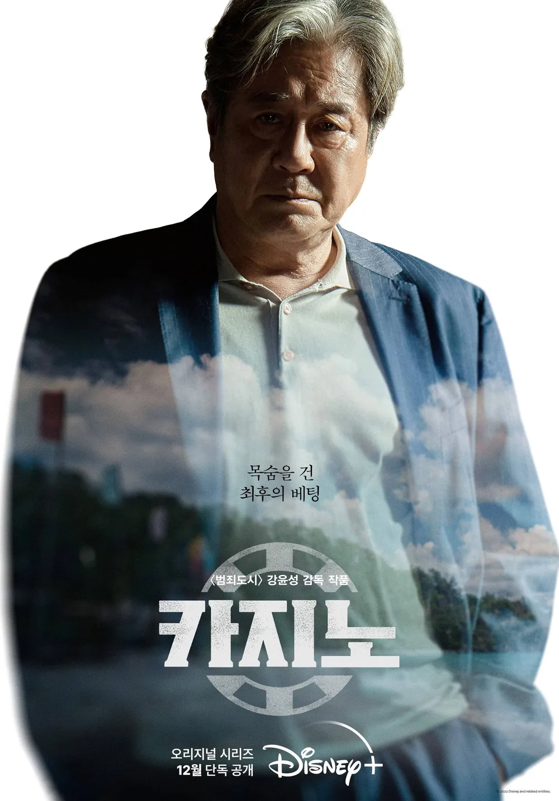
중반부는 “차무식”을 중심으로 범죄 드라마나 영화에 자기 삶을 빗댄 트랙들이 나옵니다. 앨범에서도 굉장히 중요한 구간인데요. 빌스택스님이 생각하시는 차무식의 매력은 무엇이라고 생각하셨나요?
무서울 땐 한없이 무섭지만, 자기 사람이면 하나하나 다 챙겨주잖아요. 거기다 야망 크고 무대포 정신의, 진짜 [LIVE FAST DIE SKRT] 그 자체잖아요. 그냥 시발 살다 가는 거야. 아, 이야기가 나와서 말인데 최근에 영화 오디션 하나 제의가 들어와서 보고 왔어요.
오, 어떤 작품이었나요?
버닝 찍으셨던 이창동 감독님, 그 작품에서 마약 중독자, 조폭 이런 역할로..(웃음).
여러 분야에 가능성을 열어두고 계시는 것 같은데 혹시 배우의 길에도 관심이 있으신지(웃음).
아니야, 절대, Nono(웃음). 개빡세요. 너무 어려워요. 저는 외우는 게 젬병이라 대사를 잘 못 외우거든요. 내가 NG를 내면 남들까지 다 재촬영해야 하고 얼마나 미안할까요. 저는 절대 못 할 것 같습니다.
아무래도 뮤지션으로서 이야기할 때는 자기 이야기만 하면 되는데, 영화는 타인을 연기하는 거니 결이 많이 다르죠. 그러고 보니 다음 트랙인 “나쁜 영화” 가사를 보면 ‘국힙에서 빼 내 지분’이 있잖아요. 요즘 이거 관련해서 이런저런 이야기들이 많이 나오다 보니까 이제 빌스택스님도 한국힙합과 거리를 두려는 건가? 싶었어요.
아닙니다. 제가 한국 힙합 그 자체죠. 이십몇 년 동안, 한국 힙합의 시작부터 지금까지 있었는데. 거기서 내 자리 빼라는 건 이제 은퇴하니까 지분 정리 같은 느낌이죠. 나 이제 간다-? 이런 느낌?
저의 억측이었네요. 다행입니다(웃음). “MDMA”부터는 빌스택스님의 사랑에 대한 이야기로 넘어가게 됩니다. 여러 일을 겪으시면서 사랑에 대한 관점이 많이 바뀌었을 것 같아요.
그렇죠. 이제는 이성과의 사랑이 뭔지 잘 모르겠어요. 서로 챙겨주는 것이 사랑인가? 몸을 섞는 것? 아니면 이 모든 것들이 사랑인가? 쉽지 않습니다. 상대방을 내 마음대로 만들 수도 없고. 이게 한 사람과 변함없이 오래 간다는 것이 쉬운 것 같지 않습니다.
어떻게보면 자기쾌락적인 이야기들이기도 하고요.
근데 이게 과연 ‘저만의 즐거움’일까요? 나는 같이 섹스하자는 권유한 거고, 상대방이 오케이 한 건데. 나만 즐기는 게 아니라 함께 즐기는 거죠.
설득이 되네요(웃음).
아무튼 이성과의 사랑이 무엇인지는 잘 모르겠지만, 아들에 대한 사랑은 알겠어요(웃음).
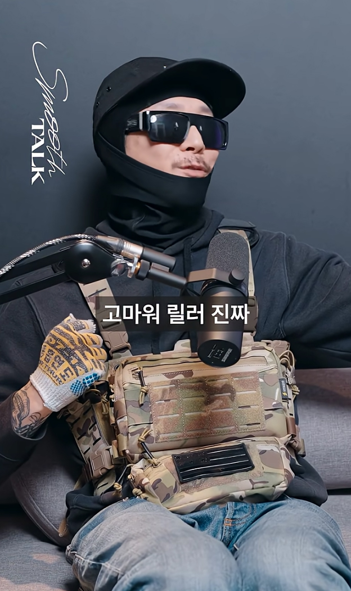
이런 ‘사랑 노래로 돈 버는 방법’을 알려준 분이 바로 릴러말즈 님입니다. 처음에 믹마 이야기할 때도 릴러말즈님 이야기가 나왔고, 예전에 피캐시디님이 진행하신 스무스톡에서 릴러말즈 님이 많은 영향을 끼쳤다고 들었어요.
릴러가 저희 집에도 놀러 오고, 작업실에 초대도 해주고, 밖에서도 만나고, 정말 많이 만났어요. 그냥 처음에는 하자고 해서 만났는데 그 시간 중에 80%는 녹음만 한 것 같아요. 뭔가 꽂히면 저희 집에 장비 다 들고 와서 녹음하기도 하고. ‘형, 요즘 이렇게 하는 게 짱이야.’, ‘형, 장비 뭐 써?’ 이것저것 물어보고 추천하면서 어린놈의 후배가 저한테 뭔가를 막 알려주는 거예요. 근데 저도 이 바닥에 오래 있었으니까 이야기 나눠보면 딱 알잖아요. 많이 알아요. 저보다 훨씬 더. 내 후배가 아니라 나보다 더 많이 알고 잘났잖아? 그래서 이 친구의 말을 귀담아듣기 시작했어요. 그리고 저는 릴러한테 수호천사라고 부르거든요. 제가 우울증이 걸렸을 때 막 집에 찾아와서 같이 저를 위해 울어줬어요. 손잡고, 안아주고, 형 힘내라고. 완전 베스트 프렌드가 되었죠.
가사 작법에 있어서도 많은 영향을 끼치셨다고.
한 줄 한 줄 바로바로 가사를 써서 녹음하는 방식이에요. 녹음을 틀어 놓고 일단 아무 랩이나 뱉어요. 그러다 오 이거 좋은데? 하고 두고, 이걸 들으면서 다음 줄을 뱉어요. 이렇게 라인 하나하나를 빌드업하면서 완성해 나가는 거예요. 여기다 더블링에 애드립까지 넣어주고. 릴러는 이 방식으로 7분 만에 녹음을 다 끝내요. 아예 7분 타이머를 걸어 놓고 하더라고요. 그래서 저거 보고 내가 저 정도까지는 못 하겠지만, 몇 시간씩 하다 보면 가능할 것 같다는 생각이 드는 거예요. 저는 릴러의 방식과 제 방식을 합쳐서 프리스타일도 하고, 가사를 쓰기도 하고, 이렇게 섞어서 진행했어요.
이게 들어보면 약간 즉흥적으로 짠 것 같은 라인이 보여요. ‘피자 먹고 피자’같은(웃음).
그거 완전 프리스타일 맞아요(웃음).
펀치-인 방식이라고 하죠. 요즘에는 이런 방식으로 이제 녹음을 하더라고요. 2번 트랙에 참여했던 권기백님이 바로 생각나는데.
기백이 벌스도 프리스타일 맞아요. 그리고 “차무식”은 제가 녹음해 가지고 릴러말즈한테 보냈는데 30분 뒤에 피처링에 믹스까지 다 완료된 스템파일까지 보내주더라고요. 녹음 보내줬는데 30분 동안 답이 없더니 갑자기 파일이 우르르 오고.
장난 아니네요. 릴러말즈 님은 진짜 천재인가 보다.
천재인데다 노력형이고, 진짜 이상한 존재예요. 정말 대단합니다. 같이 있으면 꼬리가 내려갑니다. 와.. 좆된다.. 존나 잘한다..
겸손해지는 거네요(웃음).
나 은퇴하길 잘했다. 이런 애들이랑 경쟁해야 한다니 나는 못할 것 같다(웃음).
인터뷰가 갑자기 릴러말즈님 찬양회로 바뀌었어요(웃음).
그럴 수밖에 없어요. 이번 앨범 작업 과정에서 릴러말즈가 한 30%의 지분을 가지고 있다고 봐요.
그러면 실질적인 앨범 작업기간은 얼마 정도 걸리신 걸까요?
한 1년? 예전 작품이랑 비교하면 비교적 빠른 편이었어요. 우울증 극복하고 우르르 달린 거라서. 한 10~20%는 2~3년 전에 만들어져 있었는데, 그 나머지를 1년이 안되는 시간에 만든 것 같아요.
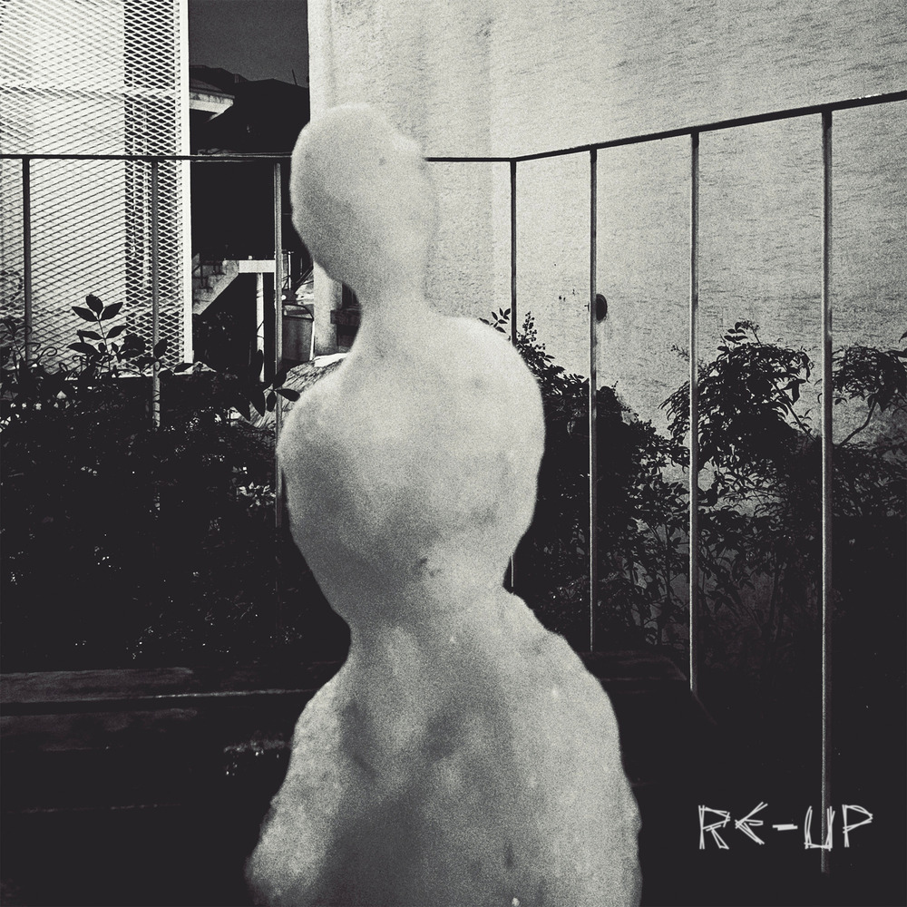
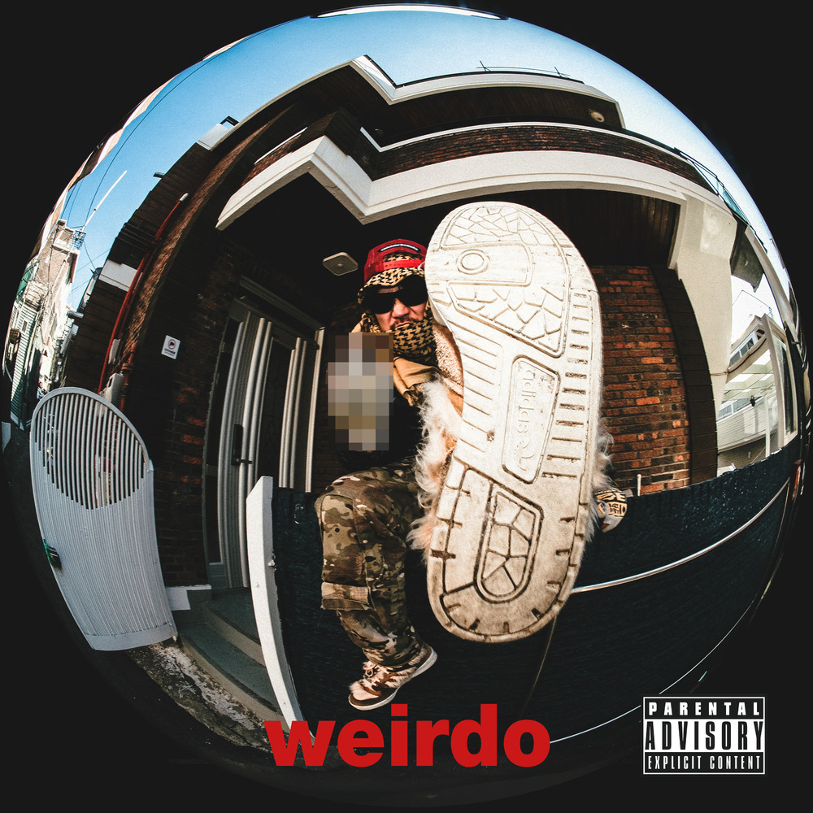
2025년에도 싱글 두 곡을 발표하셨잖아요. 이것도 원래는 은퇴 앨범에 수록하기로 계획했던 걸까요? “Re-up”같은 경우는 빌스택스님의 마지막 붐-뱁 트랙이라고도 코멘트 하셨고요.
당시 ‘하이브리드’라는 컨셉으로 앨범 작업을 진행하다가 그 컨셉을 버리면서 곡들도 던진거죠. 더 잘 만들어야겠다는 생각에. 하이브리드라는 개념이 너무 광범위하더라고요. 어떤게 하이브리드지? 정신적으로? 음악적으로? 근데 [LIVE FAST DIE SKRT] 여기에는 할 수 있는 이야기들이 더 많아지고 듣는 사람들이 여기로부터 오는 이모션이 더 와닿잖아요.
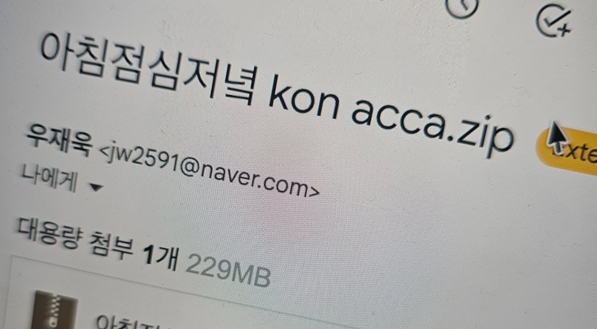
은퇴작이라는 점에서는 하이브리드보다 이번 타이틀이 훨씬 와닿는 느낌입니다(웃음). 이 이야기들을 넘어 마지막 트랙 “아침 점심 저녁”에 당도하게 됩니다. 이 트랙이 처음에는 보너스 트랙이었죠?
맞아요. 원래는 보너스 트랙으로 넣으려고 했는데 처음 들었을 때부터 내 진짜 ‘마지막 곡’이라는 생각이 들었어요. 와, 이거 보너스로 갈 게 아니다. 이건 마지막 트랙이다. 내 모든 커리어의 마지막.
예전에 SNS에서 “Lonely Stoner”를 뛰어넘는 곡이 나온 것 같다고 하셨는데, 진짜 그런 곡이 나온 것 같아요.
저는 거의 모든 노래들을 다 패러디해 보거든요. 이 노래 더 노래 다 해보다 ‘아침 먹고 땡 점심 먹고 땡 저녁 먹고 땡’ 불러봤는데, 이게 컨셉과 착 달라붙더라고요. 이 노래 릴러가 들어보고 존나 Rock이라고, 힙합 아니라 이거 완전 락이라고 하더라고요. 저 ‘락스코’였잖아요(웃음). 락을 정말 존경하고 동경하거든요. 좋은 얘기 들었죠.
마지막 트랙이 “이 동네에서 젤쎈약”이었던 당시에는 어떠한 무드로 끝을 맺고 싶어하셨던 걸까요?
사실 ‘어떠한 방식으로 마무리 짓고 싶다’라는 생각이 딱히 들지 않았어요. 이걸 신경 쓰다 보면 생각이 너무 많아지고, 의미를 담게 되고, 그러면 촌스러워지고 유치해져요. 그래서 내 끝을 어떻게 지어야겠다는 생각을 아예 안 했어요.
최후반부에 mary jane(대마초 은어) 언급하면서 빌스택스님 보컬 감정선이 팍 터지는 구간이 있습니다. 이제 대마초는 빌스텍스님과 떼려야 뗄 수 없는 키워드잖아요. [DETOX] 때는 그것 자체가 컨셉이었고, 이번에는 삶의 일부처럼 라인 하나하나에 녹아든.
정확합니다(웃음).
저는 이 곡이랑 연결지어서 중반부 사랑노래의 대상 역시 대마초의 메타포라고 생각하기도 했거든요.
제가 그렇게 디테일한 인간이 아닙니다(웃음). 근데 그렇게 느끼셨다면 저는 정말 운이 좋은 사람인 거고. 마지막 노래도 프리스타일로 불렀어요.
그 대목에서 살짝 울컥했어요. 지금의 빌스택스님에게 있어 대마초는 이번 앨범처럼 삶에 녹아든 느낌이거든요. 요즘에는 법적, 사회적으로 관련하여 대마초에 대한 논의가 진전이 있는 편일까요?
큰 진전은 없지만 사람들의 인식은 정말 많이 변했어요. 예전에는 90%가 욕을 했다면 요즘에는 그래도 한 60% 정도로? 근데 일반 사람들도 대마 관련해서 많은 이야기를 접하고 해외여행도 많이 다녀보면서 다 알잖아요. 피우는 사람들이 아무런 문제 없이, 중독 문제없이 잘 지내는 것들 보면.
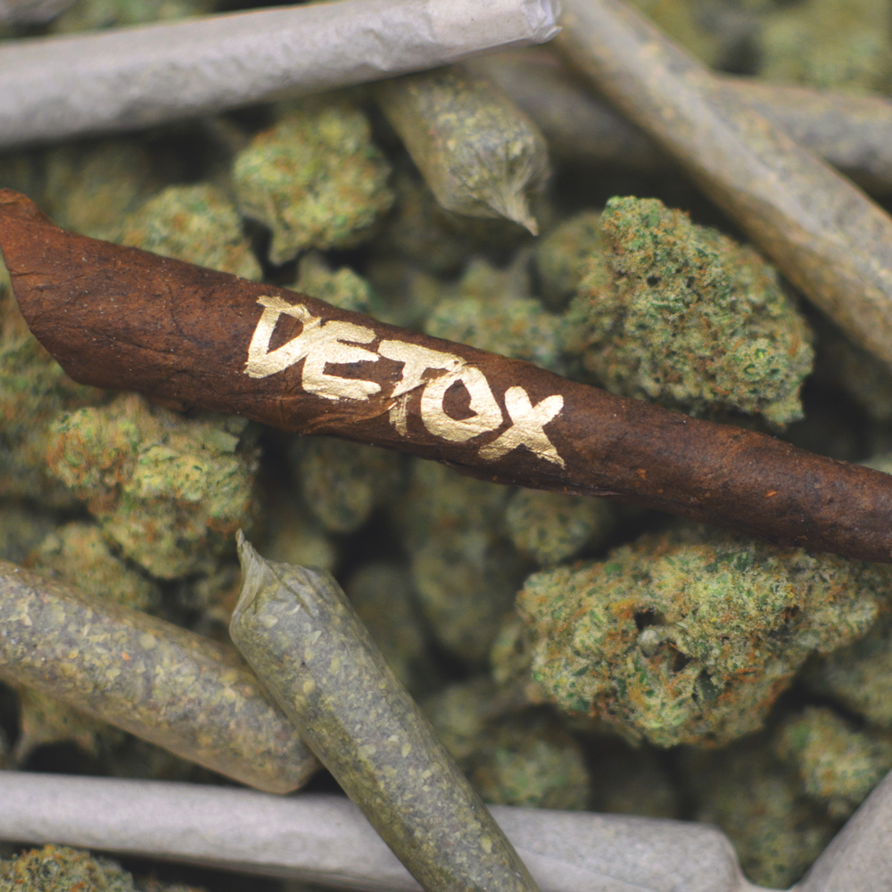
개인적으로는 이러한 인식 변환이 일어난 직접적인 계기가 [DETOX]라고 생각하는데요.
맞아요. 그때 이후로 정말 많이 변했어요. 처음에는 제가 관련해서 이슈가 됐을 때만 해도 대부분의 사람이 욕했는데, 앨범이 나온 이후로는 제 이름이 뉴스 메인에 걸렸을 때도 욕하는 사람은 여전히 있었지만, 옹호하는 사람들도 분명히 있었죠. 이제는 대마초 보고 왜 범법을 해? 정도로 말하고 말지 마약 하지 마, 이런 느낌은 많이 줄어든 것 같아요.
예전에는 대마초가 불법 마약이랑 같은 카테고리로 인식되었지만, 이제 이런 시선도 많이 변했더라고요.
제가 총대를 메고 합법화 이야기를 했는데 문제가 되지 않는 것을 보니까 사람들에게도 용기가 생기는 것 같아요. 자신의 목소리를 내는 사람들이 늘어나는 거죠. 자유민주주의 국가에서 소신대로 말할 자유가 있는데 저를 막 체포할 수는 없는 거잖아요. 하지만 자기 목소리를 내는 것에 겁내는 사람도 많아요. 괜히 한마디했다가 조사당하고 잡혀갈까 봐. 근데 그렇지 않다는 것을 본 이후로 저를 통해서 사람들이 더 용기를 얻은 것 같아요. 내 의견 말하는 게 어때서?
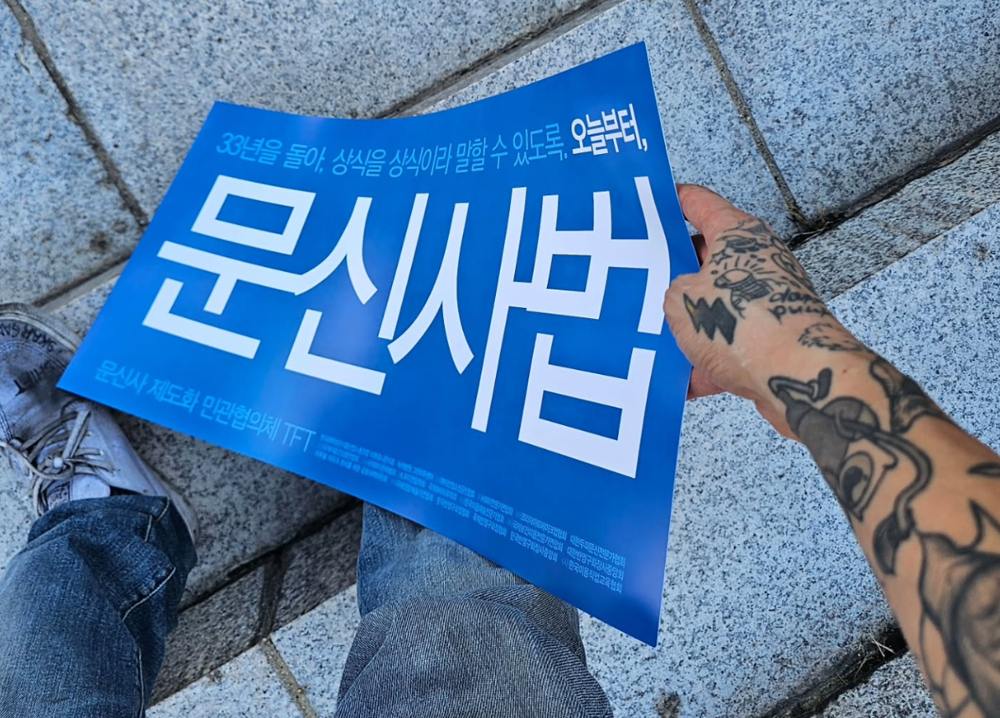
그래서 이후에 인스타를 보면 이륜차의 고속도로 통행 관련이나 문신사 관련 법 등에 대해서도 목소리를 내셨던 적이 있죠. 특히 문신사 관련 법안은 사회적으로도 이슈가 됐는데요.
약간 동병상련이라고 느꼈거든요. 대마초도 그렇지만, 오토바이랑 문신의 공통점이 하나 있어요. 이게 그렇게 큰 죄를 짓는 무언가가 아니거든요. 오토바이를 타는 것이, 문신을 하는 것은 분명 죄가 아닌데 대한민국에서는 죄를 저지르는 것 바로 아래 단계로 봐요. 너 오토바이 타? 시끄럽고 위험한걸? 양아치네? 너 문신해? 조폭이야? 이런 식으로 사회적으로 너무 공격을 당하는 분야예요. 그래서 제가 여기다가도 왜? 라고 질문을 던진 거예요. 이게 무엇이 잘못된 거지? 나도 문신 좋아하고, 친구들과도 연관이 있는 사안이다 보니까 내가 영향력이 조금이라도 있다면 도와주는 게 좋을 것 같다고 생각한 거죠.
어떻게 보면 편견에 대해 맞서 싸우는 거네요.
너가 싫다고 왜 이게 불법이 돼야 해? 좋아하는 사람도 분명히 있는데. 오토바이 타는 걸 좋아하는 사람, 문신 좋아하는 사람도 있는데 싫으면 왜 참견이야. 신경 쓰지 말고 너 할 일 하면 되잖아, 약간 이런 느낌인 거죠. 오토바이 싫으면 타지 마. 게이 싫으면 게이 만나지 말고. 신경 쓰지 않으면 되지 왜 동성결혼 못 하게 막으려고 그러지? 약간 저는 그런 생각이에요. 범죄도 아닌데 범죄로 치부하는 불합리한 부분이 너무 많다고 생각합니다.
예전 [DETOX] 타이틀 의미가 편견에 찌든 사회를 ‘해독’한다는 의미로 정한 거였잖아요. 그럼 지금 우리 사회는 어느 정도 ‘해독’이 되었다고 생각하시나요?
한 40%? 아까 말씀드렸던 것처럼 60% 욕하고, 40%는 옹호한다 그랬으니 한 40%.
앞으로도 ‘해독’을 위해 계속 움직일 생각이 있으신지도 궁금해요.
살아있는 한 계속 움직여야죠.
그래도 이러한 인식들이 차츰 바뀌어 나가고 있는 것 같습니다. 빌스택스 님께서는 사회가 나아가고 있는 방향이 점차 나아지고 있는 쪽으로 가고 있다고 생각하시나요?
그럴 수밖에 없다고 생각해요. 이 우주는 좋은 쪽으로 가게 돼 있어요. 전쟁은 끝나게 돼 있고, 불은 꺼지게 돼 있어요. 결국은 해피엔딩이에요.
‘빌스택스의 마지막’을 다룬 이번 앨범도, 어떻게 보면 해피엔딩이겠죠?
완전 해피 엔딩이죠. 안 죽고 살아서 은퇴 앨범을 완성했으니까(웃음).
마지막 녹음 딱 끝났을 때는 기분이 어떠셨어요?
너무 행복했고 막 박수 쳤어요. 박수 치면서 막 와!!!!! 이랬었죠(웃음).
아쉬운 거는 없으셨나봐요(웃음).
하나도 없었어요. 좆됐다. 나는 해냈다. 이 정도면 팬들한테 쓴소리 안 듣고 ‘형 수고했다’, 이런 소리 듣겠구나, 박수받겠다, 이런 느낌이었죠.
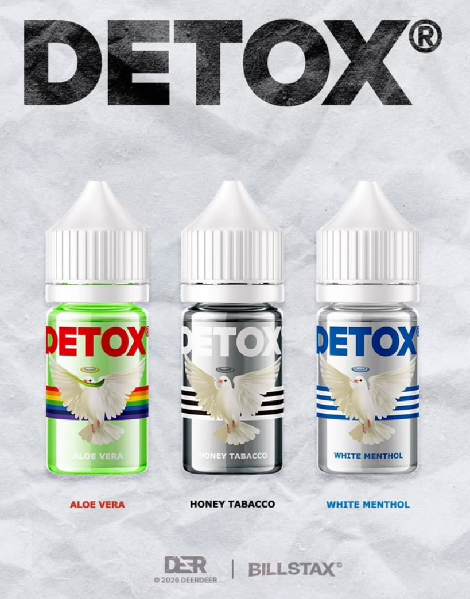
이후에는 어떠한 일을 하고 싶으신가요?
전자담배 쪽? 지금 스모킹 문화에 발을 담갔기 때문에 관련 사업을 준비하고 있어요. 의류도 그렇고 여러 가지 해보려고 해요. 다양한 것들을 해보고 싶어요.
그러면 이제 음악과는 아예 연을 끊는?
제 개인 앨범은 더 이상 나오지 않겠지만, 제가 너무 사랑하는 동생이 피처링 한번 부탁하면 할 수 있지 않을까요?(웃음) 게다가 은퇴 앨범을 냈지만 1~2년 동안 계속 앨범 활동할 거고, 무대도 설 거고. 그 과정에서 누가 저한테 피처링 해달라고 하면 난 은퇴했으니까 안 할래, 이러는 게 아니라 해줄 수도 있을 거예요. 이제 무대도 그만 서고 싶을 때 완전하게 끝나지 않을까 싶습니다.
근데 앨범은 절대 안 만들어요. 앨범을 만든다는 것 자체가 너무 힘들어요. 내일의 저를 끌어다 쓰는 과정이라 너무 고통스럽고 아프더라고요.
언제부터 앨범을 만드는게 고통스럽다고 생각하신 걸까요?
[DETOX] 때부터요. 작업하는 것 자체가 굉장히 고문처럼 느껴졌어요.
일상과 맞물리면서 앨범을 만든다는 것도 힘들었을 것 같아요. 가정의 생활을 보내다가 빠듯하게 잠깐 작업하고.
맞아요. 흐름이 끊어지는 거죠. 아빠인 신동열의 모습과 뮤지션 빌스택스의 모습이 충돌이 일어났어요. 아빠로서, 남편으로서 8년을 살다 보니 뮤지션으로서의 제가 사라진 거예요. 빌스택스가 없어지고 신동열만 있었어요.
작업에 몰입하는 시간이랑 이에 맞는 시간대도 필요할 거고요. 솔직히 이런 바이브의 앨범을 점심에 작업하셨다는 이야기를 듣고 놀랐어요.
그러니까요. 바이브가 안 맞아요. 해가 쨍쨍 떠 있고 깨어 있는 상태잖아요. 엑스터시 상태가 아니에요. 몰입하는, 환희에 들어가 있는 상태가 아니라 기합 빡 넣고 자! 가자! 이런 상태예요. 그래도 불가능은 없더라고요. 적응되니까 오히려 더 좋은 점도 있더라고요(웃음). 나중에는 밤에 작업하는 것보다 좋았어요.
창의력은 내가 만드는 것이 아니라 신이 나에게 선물을 주는 것이다, 라고 생각했어요. 신이 선물을 주는 시간은 정해져 있지 않다. 내가 언제든 팔 벌려 가능성을 열어 둔 다음에 언제 떨어질지 모르는 축복을 받아들일 준비를 하는 거죠. 그러면 신이 하나씩 무언가를 던져줘요. 딱 좋은 걸 받게 되면 감사합니다!!! 하고 소리쳐요. 그러면 또 신이 감동했는지 뭔가를 또 던져 주더라고요(웃음).
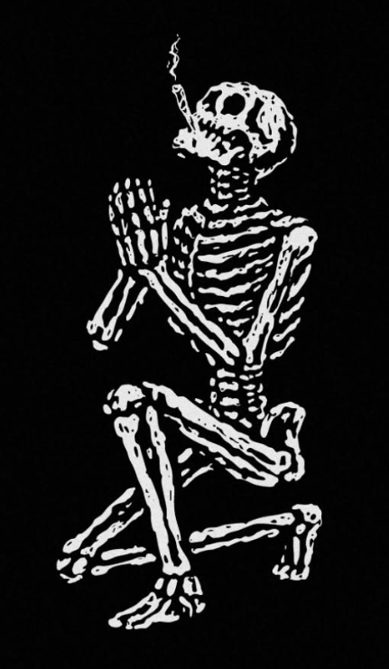
커버아트의 해골이 기도하는 모습도 빌스택스님이 영감을 얻는 순간에서 비롯된 커버아트라고도 볼 수 있겠네요.
맞아요. 사실 제가 원래 신을 안 믿었거든요. 무신론자인데, 릴러말즈 때문에 신을 믿게 됐어요. 또 릴러말즈 이야기로 돌아가네(웃음). 그 친구랑 이거 관련해서 이야기를 나눠보다가 나온 결론이거든요. 그러면 형은 신을 믿는 거라고 말하더라고요. 이게 하나님인지 부처님인지는 잘 모르겠고, 어떠한 형태의 신인지는 모르겠지만 분명히 존재하는 것 같다고.
특정한 종교의 신이 아닌 절대자의 개념으로.
그렇죠. 신이 있는지 없는지는 잘 모르겠지만, 릴러랑 대화하다 보니까 있을 확률이 더 높다는 걸 깨달았어요. 있다고 믿으면 있는 거고, 없다고 믿으면 없는 거고. 근데 있다고 믿으니까 마음에 의지가 되고 좀 편해요. 지금까지는 제 짐이 온전히 나의 것이었는데, 이제는 신에게 좀 덜어낼 수가 있더라고요. 이런 게 바로 신의 뜻이구나. 신의 존재에 대해 믿고 있고 감사하고 있어요. 누군지는 모르겠지만 너무 고마워요(웃음).
이렇게 들어보니 이번 앨범의 또다른 키워드는 ‘구원’일 수도 있겠다는 생각도 들어요. 빌스택스의 마지막이 구원받는다는 서사로 읽히니까 좀 감동적이기도 하네요.
구원이죠. 죽기 전에는 누구다 다 구원받지 않을까요? 다들 감사하면서(웃음).
바스코부터 시작해서 빌스택스까지의 커리어를 쭉 봤을 때, 음악을 하길 정말 잘했다고 생각하던 때가 언제셨는지도 궁금해요.
최근이요. 제가 [DETOX] 이후로 개인 음악을 얼마나 쉬었죠? 근데도 지금도 연금처럼 적지 않은 돈이 꾸준히 들어와요. 나 복 받았구나. 음악하길 정말 잘했다. 내 친구들은 회사 잘리면 바로 다음 달부터 월급이 안 들어오는데, 나는 5년 동안 쉬어도 돈이 들어오는구나. 우리 아들이 음악한다고 하면 적극적으로 밀어줘야겠다(웃음).
(웃음)아드님은 음악에 관심이 좀 있는 편인가요?
전혀요(웃음). 듣는 것조차 관심 없어 하는 거 같아요.
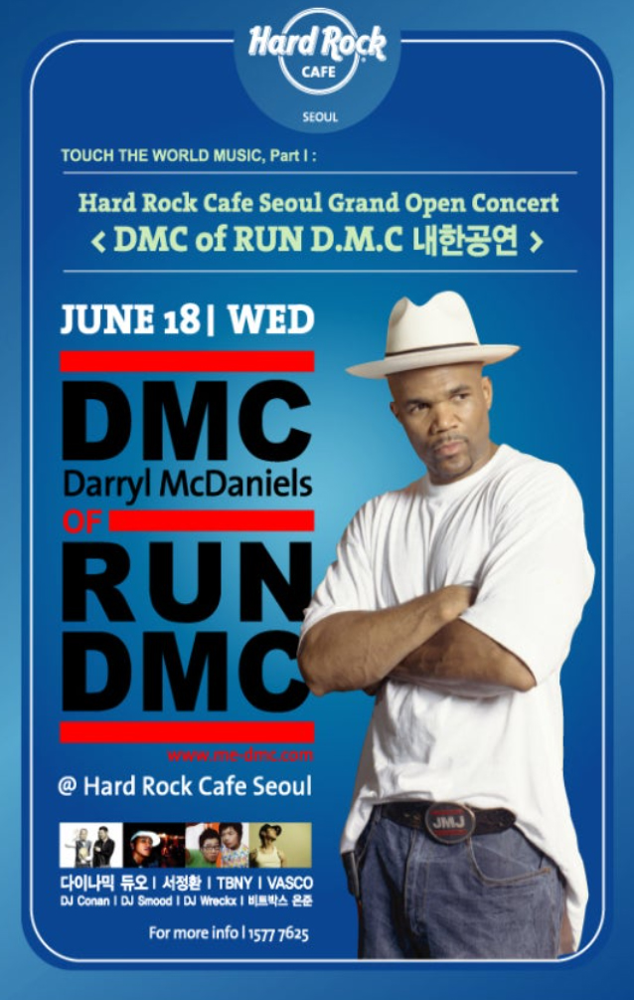
그럼 직접적으로 은퇴를 결심하게 된 계기는 무엇 때문이었는지?
아주 예전에, RUN DMC가 내한 왔을 때 제가 게스트로 올라갔던 적이 있어요. 이후에 이분들이 무대에서 공연하는 것을 보는데, 나이가 나이잖아요. 예전의 그 바이브가 나오지 않는 거죠. 거기다 한 분은 돌아가시고 두 분이 공연을 하시는데.. 멋진 분들이 맞지만 멋있기보다는 측은한 마음이 더 컸어요. 전설이죠. 이 바닥을 만드신 형님들이시죠. 하지만 모두 늙는구나, 시간 앞에는 장사 없구나. 나는 저 때까지는 음악하지 말아야겠다는 생각이 든 거예요. 랩이라는 장르에서 저기까지 가면 안 되겠다는 생각이 들었어요.
그러면 랩을 언제까지 해야 할까? 너무 나이를 먹게 되면 20대 애들 앞에서 공연하는 것이 더 이상 즐겁지 않을 것 같아요. 그 또래의 아이들과 제가 감정적으로 연결되기에는 전 이제 너무나도 다른 삶을 살고 있고, 이걸 맞추는 것도 쉽지가 않아요. 맞추기 위해서는 제 몸을 다 깎아내야 해요. 그들 사이에 끼어 놀아야 하고, 시간을 보내고, 말 그대로 ‘20대처럼’ 살아야 하거든요. 그리고 그렇게 살아보니까 미친 듯이 힘들어요. 저는 래퍼지만 한 아이의 아빠면서 엄마기도 하잖아요. 그래서 좀 빡세요.
음악을 아직도 많이 들으시잖아요. 그렇다면 업계에서 계속 일하실 수도 있을 텐데.
그렇죠. 근데 한 6개월 동안 우울증 왔을 때는 음악을 아예 안 들었어요. 들어도 하나도 재미없고 하나도 안 신나는데 뭐 어쩌라고? 이런 느낌이었어요. 최근에 좀 듣는 거지. 그리고 이제 제가 40대잖아요. 제가 소득 활동을 할 수 있는 남은 시간이 약 20년 남짓이라고 한다면 남은 시간 동안에는 다른 일을 해보면서 보내고 싶었어요. 이십 몇 년 음악 한 거 정말 오래 한 거라고 생각하거든요.
20년이 넘는 긴 여정의 마지막이기도 합니다. 정말 뮤지션으로서의 마지막이구나, 라고 실감을 하셨던 때가 언제였어요?
이 질문을 받는 지금, 이 순간이요(웃음). 제가 질문지 리스트를 보고 어떻게 답변할지 생각했는데, 이 질문이 눈에 확 들어오는 거예요. 지금까지는 내가 마지막이라고 말하고 다녔는데, 남이 이렇게 이야기를 꺼내니까 실감이 났어요. 아, 진짜 마지막이구나.. 지금 막 물올랐는데.
엄청 주목받고 계시잖아요. 거기다 이번 앨범 작업하면서 많은 것들을 배워서 더 잘할 수 있을 텐데. 혹시 은퇴를 번복하실 생각은…
사업해서 돈 많이 벌겠습니다(웃음).
그래도 아직 앨범과 관련해 많은 계획이 잡혀있을 것 같아요. 공연이라든지, 파티라든지. 그러면 적어도 1년 동안은 빌스택스님의 모습을 더 볼 수 있겠네요. 만약 시상식 같은데서 수상한다면 참석하실 의향이 있으신지?
어우 무조건 참석해야죠(웃음).
미리 들어본 개인적인 소감으로는 무조건 시상식 각 부문에 오를 것 같습니다.
저는 솔직히 적어도 두 개 정도는 받을 것 같아요. [DETOX] 상 받기 6개월 전에도 상 주셔서 감사한다고 미리 이야기하기도 했어요(웃음). 저는 받을 것 같은데요? 랩을 더 잘해서가 아니라 이건 느낌, 아우라 같은 거예요. 그냥 앨범 이름부터, 커버아트까지 저는 명반의 냄새가 느껴집니다.
그렇게 된다면 내년 2월 KHA, 한대음 수상 후보 발표 시기 즈음에 우리 여기서 다시 만나 인터뷰 하는 걸로(웃음).
너무 좋습니다(웃음).
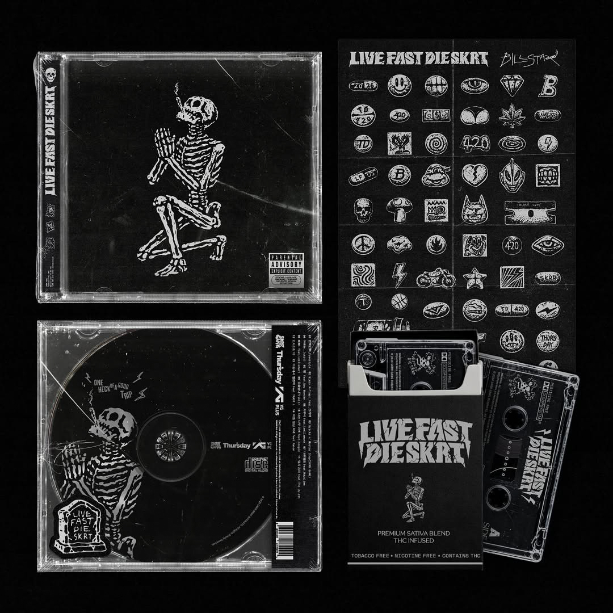
그러면 [LIVE FAST DIE SKRT]도 별도의 피지컬이 준비가 되는 걸까요?
먼저 CD랑 카세트 테이프가 공개되고, 바이닐도 나올 예정입니다. 존나 예쁩니다. 카세트 테이프 쉘은 자체 제작인데다 케이스는 담뱃갑이에요. LP는 안에 피같은 빨간 액체가 들어간 리퀴드 바이닐로 제작 예정이고요. 이번 앨범 피지컬들 진짜 미쳤습니다. 마지막이니까 정말 예쁘게 만들고 있습니다.
그러고보니 [DETOX] CD를 제작한다는 이야기도 있었죠.
계획은 있는데, 이거는 시간을 좀 여유를 가지고 이번 앨범과 관련한 것들 다 마무리하고 작업을 들어가려고요.
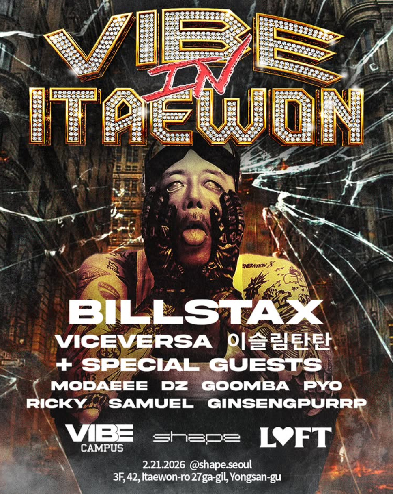
얼마 전에 Shape Seoul에서 뮤직비디오 촬영하셨었잖아요. 거기서는 어떤 곡 촬영 하셨나요?
“2,4,6,8,10”이랑 “MDMA” 두 개. 하루에 두 곡 촬영했어요.
제가 그때 포스터를 봤는데, ‘컨셉과 맞지 않는 분은 출입이 제한될 수 있다’는 문구를 봤거든요. 실제로 입뺀 당한 분이 있었나요?(웃음)
저는 모르겠네요. 공연 준비하고 있었거든요(웃음).
자체적으로 필터링 했겠네요(웃음). 전곡 뮤직비디오 촬영 예정이라고 하셨으니 지금도 꾸준히 작업 중이실 테고요.
2월 한 달 동안 8편 촬영했고, 3월에 계속 편집하고 4월 며칠 전에 추가로 2개 찍었어요. 이제 3개 정도 남은 느낌인데 또 편집해야 하고 믹스 마스터도 다시 해야 하니까… 끝날 때까지 끝난 게 아니라는 말이 맞네요. 저는 아직도 달리고 있습니다(웃음). 4월 20일 이후에도 계속 찍고 편집하고 해야 해요. 바이닐이랑 VHS 비디오는 앨범 발매 당일에 나오는 게 아니라 한 2~3개월 있다가 나오잖아요. 한 5월 중순까지는 계속 작업을 해야 하지 않을까 싶어요.
사실 인터뷰 질문지 마지막에 은퇴에 대한 소회를 여쭙는 질문이 있었잖아요. 남은 일정을 보면 적어도 올해 동안에는 계속 빌스택스 님의 모습을 뵐 수 있다는 소리가 되겠네요.
완전히 끝났다고 하기엔 아직 시기상조죠. 아직 보여줄 것도 많이 남았고, 공연도 준비해야 되고.
마지막 인사는 시상식장에서 해야겠네요. 상 하나 들고서 마지막 인사 나누는 것으로(웃음).
좋네요(웃음). 박수칠 때 떠나라!
그러니 마지막 은퇴 인사 대신, 인터뷰 마무리하면서 하고 싶은 말을 부탁드리겠습니다.
개인적인 바람으로는 다들 뭔가 취한 상태에서 들어줬으면 좋을 것 같아요. 마지막 앨범이라고 너무 의미 부여하지 말고, 그냥 힙합 앨범 하나 나왔네? 같은 자세로 들어줬으면 좋겠어요. 사실 의미 부여하고 들어보려 해도 진짜 별거 없거든요. 그냥 빌스택스의 앨범이다, 하고 들어주세요. 즐겁게 많이 들어주시고. 뭐, 음악이 좋을 거니까 즐겁게 많이 들어주실 것 같고(웃음).
행복합시다!
인터뷰에 참여해주신 빌스택스 님께 감사드립니다!